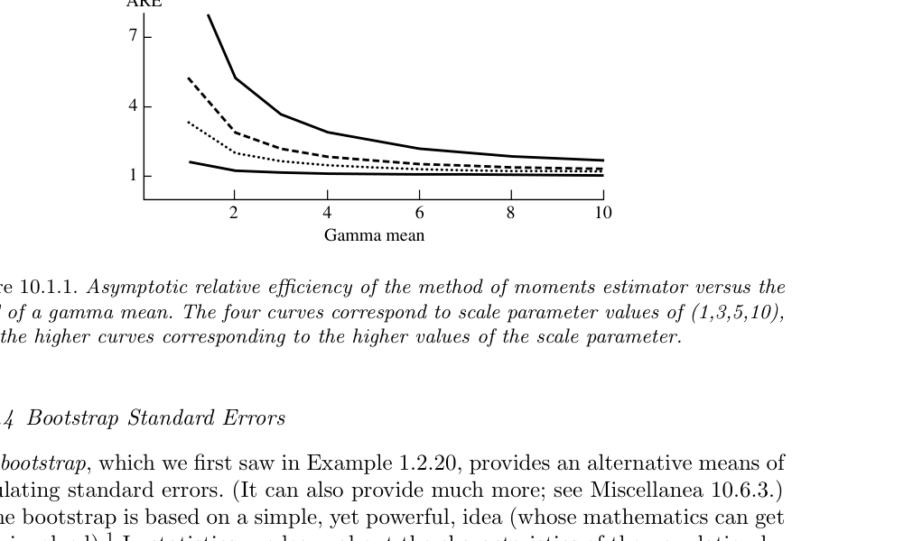
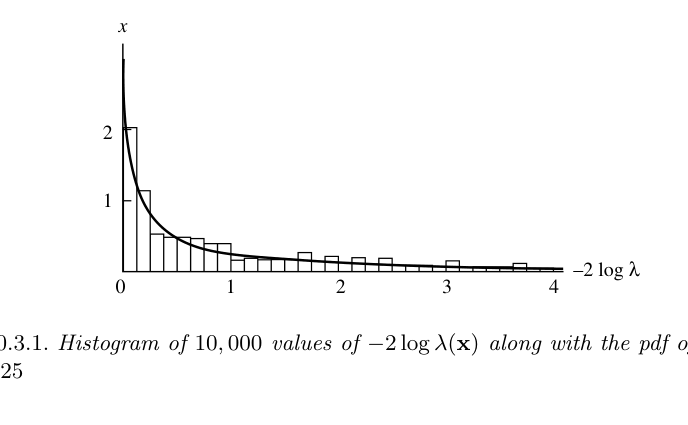
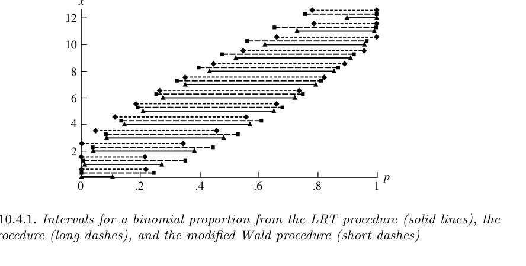
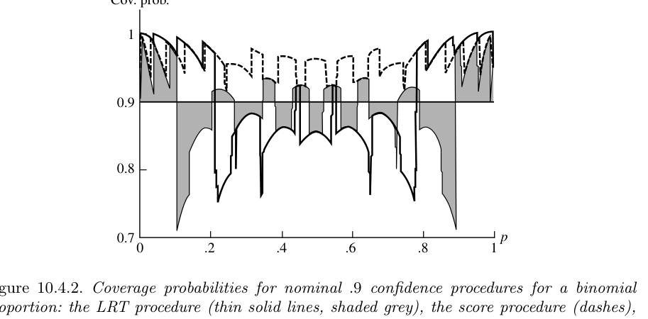

10 점근적 평가
“I know, my dear Watson, that you share my love of all that is bizarre and outside the conventions and humdrum routine of everyday life.”
— Sherlock Holmes, The Red-headed League
- 지금까지의 장들에서는 주로 유한표본 기준(finite-sample criteria)을 사용했다.
- 이 장에서는 표본크기 \(n\)이 무한히 커질 때 절차가 어떻게 행동하는지, 즉 점근적 성질(asymptotic properties)을 다룬다.
- 점근적 평가의 장점은 계산이 크게 단순화된다는 데 있다.
- 유한표본에서는 정확한 분포를 구하기 어렵거나 불가능한 경우가 많다.
- \(n\to\infty\)로 두면 정규분포, 카이제곱분포 같은 표준 근사가 나타난다.
- 이 근사를 통해 점추정, 가설검정, 구간추정을 체계적으로 평가할 수 있다.
- 이 장은 특히 최대가능도 방법(maximum likelihood procedures)의 점근적 성질에 중점을 둔다.
- 또한 bootstrap, robust estimator, M-estimator처럼 실제 응용에서 중요한 방법들을 점근적으로 평가한다.
이 장의 큰 흐름
- 점추정의 점근적 평가: 일치성, 점근분산, 점근효율
- bootstrap 표준오차: 비모수 bootstrap과 모수 bootstrap
- robustness: 평균, 중앙값, Huber 추정량, M-estimator
- 가설검정: LRT의 카이제곱 근사, Wald 검정, score 검정, robust test
- 구간추정: MLE 기반 구간, score 구간, LRT 구간, 근사 pivot 구간
- 기타 주제: superefficiency, 정규성 조건, bootstrap theory, influence function
10.1 점추정
10.1.1 일치성
- 일치성(consistency)은 추정량이 표본크기가 커질수록 참값에 가까워지는 성질이다.
- 점근적 추론에서 가장 기본적인 요구조건이다.
- 일치성은 하나의 추정량이 아니라 표본크기 \(n\)마다 정의되는 추정량열(sequence of estimators)에 대한 성질이다.
10.1.1.1 추정량열
- 관측값 \(X_1,X_2,\ldots\)가 분포 \(f(x\mid\theta)\)에서 나온다고 하자.
- 표본크기 \(n\)일 때 같은 추정 절차를 적용하면
\[ W_n=W_n(X_1,\ldots,X_n) \]
이라는 추정량열을 얻는다. - 예를 들어 표본평균은
\[ \bar X_1=X_1, \qquad \bar X_2=\frac{X_1+X_2}{2}, \qquad \bar X_3=\frac{X_1+X_2+X_3}{3}, \quad\ldots \]
처럼 하나의 열로 생각해야 한다.
정의: 일치추정량열
추정량열 \(W_n=W_n(X_1,\ldots,X_n)\)이 모수 \(\theta\)의 일치추정량열이라는 것은, 모든 \(\epsilon>0\)과 모든 \(\theta\in\Theta\)에 대해
\[ \lim_{n\to\infty}P_\theta(|W_n-\theta|<\epsilon)=1 \tag{10.1.1} \]
이 성립한다는 뜻이다.
동치로,
\[ \lim_{n\to\infty}P_\theta(|W_n-\theta|\ge\epsilon)=0 \tag{10.1.2} \]
라고 쓸 수 있다.
- 이는 확률론의 확률수렴(convergence in probability)과 같은 형태이다.
- 통계학적 정의에서는 모수 \(\theta\)마다 확률구조가 달라지므로 “모든 \(\theta\)”에 대해 성립해야 한다.
예제: 표본평균의 일치성
\(X_1,X_2,\ldots\)가 iid \(N(\theta,1)\)이라고 하자. 표본평균
\[ \bar X_n=\frac1n\sum_{i=1}^nX_i \]
은
\[ \bar X_n\sim N\left(\theta,\frac1n\right) \]
을 따른다. 따라서
\[ \begin{aligned} P_\theta(|\bar X_n-\theta|<\epsilon) &=P(-\epsilon<\bar X_n-\theta<\epsilon)\\ &=P(-\epsilon\sqrt n<Z<\epsilon\sqrt n), \qquad Z\sim N(0,1). \end{aligned} \]
\(n\to\infty\)이면 \(\epsilon\sqrt n\to\infty\)이므로 위 확률은 1로 수렴한다. 따라서 \(\bar X_n\)은 \(\theta\)의 일치추정량열이다.
10.1.2 일치성 확인을 위한 충분조건
- 일치성을 직접 적분으로 보일 필요는 없다.
- Chebyshev 부등식을 사용하면 충분조건을 쉽게 얻을 수 있다.
\[ P_\theta(|W_n-\theta|\ge\epsilon) \le \frac{E_\theta[(W_n-\theta)^2]}{\epsilon^2}. \]
- 따라서 모든 \(\theta\)에서
\[ \lim_{n\to\infty}E_\theta[(W_n-\theta)^2]=0 \]
이면 \(W_n\)은 일치적이다.
- 또한 평균제곱오차는
\[ E_\theta[(W_n-\theta)^2] = Var_\theta(W_n)+[Bias_\theta(W_n)]^2. \tag{10.1.3} \]
정리: 일치성의 충분조건
\(W_n\)이 모수 \(\theta\)의 추정량열이라고 하자. 모든 \(\theta\in\Theta\)에 대해
\[ \lim_{n\to\infty}Var_\theta(W_n)=0, \]
\[ \lim_{n\to\infty}Bias_\theta(W_n)=0 \]
이면 \(W_n\)은 \(\theta\)의 일치추정량열이다.
예제: 표본평균의 일치성 재확인
예제 10.1.2에서
\[ E_\theta\bar X_n=\theta, \qquad Var_\theta(\bar X_n)=\frac1n. \]
따라서 편향은 0이고 분산은 0으로 수렴한다. 정리 10.1.3에 의해 \(\bar X_n\)은 일치적이다.
더 일반적으로, iid 표본이 평균 \(\theta\)와 유한분산을 가지면 표본평균 \(\bar X_n\)은 \(\theta\)에 대해 일치적이다.
정리: 일치추정량의 선형변환
\(W_n\)이 \(\theta\)의 일치추정량열이라고 하자. 상수열 \(a_n,b_n\)이
\[ \lim_{n\to\infty}a_n=1, \qquad \lim_{n\to\infty}b_n=0 \]
을 만족하면
\[ U_n=a_nW_n+b_n \]
도 \(\theta\)의 일치추정량열이다.
10.1.3 MLE의 일치성
- 최대가능도추정량(MLE)은 적절한 정칙조건 아래에서 일치적이다.
- 이는 “MLE를 구하는 방법” 자체가 좋은 점근적 성질을 보장한다는 점에서 중요하다.
정리: MLE의 일치성
\(X_1,X_2,\ldots\)가 iid \(f(x\mid\theta)\)이고
\[ L(\theta\mid x)=\prod_{i=1}^n f(x_i\mid\theta) \]
가 가능도함수라고 하자. \(\hat\theta\)를 \(\theta\)의 MLE라 하고, \(\tau(\theta)\)를 \(\theta\)의 연속함수라고 하자. 정칙조건이 만족되면 모든 \(\epsilon>0\)과 모든 \(\theta\in\Theta\)에 대해
\[ \lim_{n\to\infty}P_\theta(|\tau(\hat\theta)-\tau(\theta)|\ge\epsilon)=0. \]
즉, \(\tau(\hat\theta)\)는 \(\tau(\theta)\)의 일치추정량이다.
- 증명 아이디어는 다음과 같다.
- \(n^{-1}\log L(\hat\theta\mid x)\)가 어떤 기대값으로 수렴함을 보인다.
- 이 기대값이 참 모수에서 최대가 되도록 정칙조건을 둔다.
- 그러면 \(\hat\theta\)가 \(\theta\)로 확률수렴한다.
10.2 효율성
- 일치성은 추정량이 참값으로 가는지를 묻는다.
- 효율성(efficiency)은 그 추정량이 얼마나 빠르고 안정적으로 참값에 가까워지는지를 묻는다.
- 특히 점근적 분산이 작을수록 효율적이다.
10.2.1 한계분산과 점근분산
정의: 한계분산
추정량 \(T_n\)에 대해 어떤 상수열 \(k_n\)이 존재하여
\[ \lim_{n\to\infty}k_nVar(T_n)=\tau^2<\infty \]
이면 \(\tau^2\)를 분산들의 극한(limit of the variances) 또는 한계분산(limiting variance)이라고 한다.
- 그러나 한계분산은 때때로 좋은 대규모 표본척도가 되지 못한다.
- 예를 들어 \(\bar X_n\)이 0 근처로 갈 확률은 작아지지만 \(1/\bar X_n\)의 유한표본 분산은 무한대일 수 있다.
- 이때 실제 대규모 표본 근사는 Delta method가 주는 분산이 더 유용하다.
정의: 점근분산
추정량 \(T_n\)에 대해
\[ k_n(T_n-\tau(\theta))\xrightarrow{d}N(0,\sigma^2) \]
이면 \(\sigma^2\)를 \(T_n\)의 점근분산(asymptotic variance) 또는 극한분포의 분산이라고 한다.
- 표본평균처럼 단순한 경우에는 한계분산과 점근분산이 일치한다.
- 하지만 복잡한 추정량에서는 한계분산이 무한대여도 점근분산은 유한할 수 있다.
예제: 혼합모형에서 한계분산과 점근분산의 차이
계층모형
\[ Y_n\mid W_n=w_n\sim N\{0,w_n+(1-w_n)\sigma_n^2\}, \]
\[ W_n\sim Bernoulli(p_n) \]
을 생각하자. 즉, \(Y_n\)은 확률 \(p_n\)으로 \(N(0,1)\)에서 나오고, 확률 \(1-p_n\)으로 \(N(0,\sigma_n^2)\)에서 나온다.
조건부분산 공식을 쓰면
\[ Var(Y_n)=p_n+(1-p_n)\sigma_n^2. \]
만약 \(p_n\to1\), \(\sigma_n\to\infty\), 그리고 \((1-p_n)\sigma_n^2\to\infty\)라면 한계분산은 무한대이다.
하지만 분포함수는
\[ P(Y_n<a)=p_nP(Z<a)+(1-p_n)P(Z<a/\sigma_n) \]
이고, 이는 \(P(Z<a)\)로 수렴한다. 따라서
\[ Y_n\xrightarrow{d}N(0,1). \]
즉,
\[ \text{한계분산}=\infty, \qquad \text{점근분산}=1. \]
10.2.2 점근효율성
- Cramer-Rao 하한은 유한표본에서 불편추정량의 분산에 대한 하한을 제공했다.
- 점근적으로도 비슷한 기준을 세울 수 있다.
정의: 점근효율추정량
추정량열 \(W_n\)이 \(\tau(\theta)\)에 대해
\[ \sqrt n[W_n-\tau(\theta)]\xrightarrow{d}N(0,v(\theta)) \]
이고
\[ v(\theta)= \frac{[\tau'(\theta)]^2} {E_\theta\left[\frac{\partial}{\partial\theta}\log f(X\mid\theta)\right]^2} \]
이면 \(W_n\)은 \(\tau(\theta)\)에 대해 점근적으로 효율적(asymptotically efficient)이라고 한다.
정리: MLE의 점근효율성
\(X_1,X_2,\ldots\)가 iid \(f(x\mid\theta)\)이고 \(\hat\theta\)가 \(\theta\)의 MLE라고 하자. \(\tau(\theta)\)가 연속함수이고 정칙조건이 만족되면
\[ \sqrt n[\tau(\hat\theta)-\tau(\theta)]\xrightarrow{d}N(0,v(\theta)), \]
여기서 \(v(\theta)\)는 Cramer-Rao 하한이다. 따라서 \(\tau(\hat\theta)\)는 일치적이고 점근적으로 효율적이다.
10.2.2.1 증명 아이디어: Taylor 전개
로그가능도를
\[ l(\theta\mid x)=\sum_{i=1}^n\log f(x_i\mid\theta) \]
라고 하자. 참값을 \(\theta_0\)라고 두고 \(l'(\theta\mid x)\)를 \(\theta_0\) 주변에서 전개하면
\[ l'(\theta\mid x) = l'(\theta_0\mid x)+ (\theta-\theta_0)l''(\theta_0\mid x)+\cdots. \tag{10.1.4} \]
MLE에서는 \(l'(\hat\theta\mid x)=0\)이므로
\[ \sqrt n(\hat\theta-\theta_0) = - \frac{\frac1{\sqrt n}l'(\theta_0\mid x)} {\frac1n l''(\theta_0\mid x)}. \tag{10.1.5} \]
중심극한정리와 대수의 법칙을 적용하면
\[ -\frac1{\sqrt n}l'(\theta_0\mid X) \xrightarrow{d}N(0,I(\theta_0)), \tag{10.1.6} \]
\[ \frac1n l''(\theta_0\mid X) \xrightarrow{p}-I(\theta_0). \]
따라서 Slutsky 정리에 의해
\[ \sqrt n(\hat\theta-\theta_0) \xrightarrow{d}N\left(0,\frac1{I(\theta_0)}\right). \]
10.2.3 점근정규성이 일치성을 함의함
예제: 점근정규성과 일치성
만약
\[ \sqrt n\frac{W_n-\mu}{\sigma}\xrightarrow{d}Z, \qquad Z\sim N(0,1) \]
이면
\[ W_n-\mu = \frac{\sigma}{\sqrt n} \left(\sqrt n\frac{W_n-\mu}{\sigma}\right) \xrightarrow{d}0. \]
점으로의 분포수렴은 확률수렴과 같으므로 \(W_n\)은 \(\mu\)에 대해 일치적이다.
10.3 계산과 비교
- MLE가 점근적으로 효율적이면, Cramer-Rao 하한을 MLE 분산의 근사값으로 사용할 수 있다.
- 특히 \(h(\hat\theta)\)의 분산은 Delta method와 observed information을 이용해 근사한다.
10.3.1 MLE 함수의 분산 근사
표본정보량을
\[ I_n(\theta) = E_\theta\left[\frac{\partial}{\partial\theta}\log L(\theta\mid X)\right]^2 \]
라고 하자. 그러면
\[ Var(h(\hat\theta)\mid\theta) \approx \frac{[h'(\theta)]^2}{I_n(\theta)}. \tag{10.1.7} \]
정보량 항등식을 사용하면
\[ I_n(\theta) = E_\theta\left[-\frac{\partial^2}{\partial\theta^2}\log L(\theta\mid X)\right]. \]
실제 계산에서는 \(\theta\) 대신 \(\hat\theta\)를 대입한 observed information을 자주 쓴다.
\[ \widehat I_n(\hat\theta) = - \left. \frac{\partial^2}{\partial\theta^2}\log L(\theta\mid X) \right|_{\theta=\hat\theta}. \]
따라서
\[ \widehat{Var}\{h(\hat\theta)\} \approx \frac{[h'(\hat\theta)]^2}{\widehat I_n(\hat\theta)}. \]
중요한 절차
분산을 “추정”할 때 실제로는 두 단계를 거친다.
- 먼저 이론적 분산을 점근적으로 근사한다.
- 그 근사식 안의 모수를 \(\hat\theta\)로 대체한다.
따라서 \(\widehat{Var}\{h(\hat\theta)\}\)는 “근사한 뒤 추정한 값”이다.
예제: 이항분포에서 \(\hat p\)의 분산근사
\(X_1,\ldots,X_n\)이 iid Bernoulli\((p)\)라고 하자. MLE는
\[ \hat p=\frac1n\sum_{i=1}^nX_i \]
이고 직접 계산하면
\[ Var_p(\hat p)=\frac{p(1-p)}{n}. \]
따라서 자연스러운 추정값은
\[ \widehat{Var}_p(\hat p)=\frac{\hat p(1-\hat p)}{n}. \tag{10.1.8} \]
로그가능도는
\[ \log L(p\mid x)=n\hat p\log p+n(1-\hat p)\log(1-p). \]
두 번째 미분은
\[ \frac{\partial^2}{\partial p^2}\log L(p\mid x) = -\frac{n\hat p}{p^2}-\frac{n(1-\hat p)}{(1-p)^2}. \]
\(p=\hat p\)를 대입하면
\[ \left. \frac{\partial^2}{\partial p^2}\log L(p\mid x) \right|_{p=\hat p} = -\frac{n}{\hat p(1-\hat p)}. \]
따라서 observed information 방식은 직접 계산과 같은 분산근사를 준다.
또한
\[ \sqrt n(\hat p-p)\xrightarrow{d}N(0,p(1-p)), \]
그리고 Slutsky 정리에 의해
\[ \frac{\sqrt n(\hat p-p)}{\sqrt{\hat p(1-\hat p)}} \xrightarrow{d}N(0,1). \]
10.3.1.1 Odds의 MLE와 분산
- Bernoulli의 odds는
\[ \frac{p}{1-p} \]
이다. - MLE는
\[ \frac{\hat p}{1-\hat p} \]
이다. - Delta method와 information approximation을 적용하면
\[ \widehat{Var}\left(\frac{\hat p}{1-\hat p}\right) = \frac{\hat p}{n(1-\hat p)^3}. \]
예제: Bernoulli 분산 \(p(1-p)\) 추정의 주의점
Bernoulli 분산은
\[ p(1-p) \]
이고 MLE는
\[ \hat p(1-\hat p) \]
이다. Delta method를 적용하면
\[ \widehat{Var}\{\hat p(1-\hat p)\} = \frac{\hat p(1-\hat p)(1-2\hat p)^2}{n}. \]
하지만 \(\hat p=1/2\)이면 이 근사분산은 0이 된다. 이는 명백히 과소추정이다.
문제의 원인은 함수
\[ h(p)=p(1-p) \]
가 단조함수가 아니고 \(p=1/2\)에서 도함수가 0이 된다는 데 있다. 이 경우에는 1차 Delta method가 실패하므로 2차 근사를 사용해야 한다.
10.3.2 점근상대효율
정의: 점근상대효율
두 추정량 \(W_n,V_n\)이
\[ \sqrt n[W_n-\tau(\theta)]\xrightarrow{d}N(0,\sigma_W^2), \]
\[ \sqrt n[V_n-\tau(\theta)]\xrightarrow{d}N(0,\sigma_V^2) \]
를 만족할 때, \(W_n\)에 대한 \(V_n\)의 점근상대효율은
\[ ARE(V_n,W_n)=\frac{\sigma_W^2}{\sigma_V^2} \]
이다.
- 값이 1보다 크면 \(V_n\)이 \(W_n\)보다 점근분산이 작다.
- 값이 1보다 작으면 \(V_n\)이 더 비효율적이다.
예제: 포아송 0확률 추정량의 ARE
\(X_1,X_2,\ldots\)가 iid Poisson\((\lambda)\)라고 하자. 관심대상은
\[ P(X=0)=e^{-\lambda} \]
이다.
자연스러운 추정량은
\[ \hat\tau=\frac1n\sum_{i=1}^nI(X_i=0) \]
이다. 그러면 \(I(X_i=0)\)은 Bernoulli\((e^{-\lambda})\)이므로
\[ E(\hat\tau)=e^{-\lambda}, \qquad Var(\hat\tau)=\frac{e^{-\lambda}(1-e^{-\lambda})}{n}. \]
반면 MLE는
\[ e^{-\hat\lambda}, \qquad \hat\lambda=\bar X. \]
Delta method로
\[ Var(e^{-\hat\lambda})\approx\frac{\lambda e^{-2\lambda}}{n}. \]
따라서
\[ ARE(\hat\tau,e^{-\hat\lambda}) = \frac{\lambda e^{-2\lambda}}{e^{-\lambda}(1-e^{-\lambda})} = \frac{\lambda}{e^\lambda-1}. \]
이 값은 \(\lambda=0\)에서 최대 1이고 \(\lambda\)가 커질수록 빠르게 감소한다.
예제: 감마 평균 추정
감마분포
\[ f(x\mid\alpha,\beta) = \frac{1}{\Gamma(\alpha)\beta^\alpha}x^{\alpha-1}e^{-x/\beta} \]
의 평균은 \(\alpha\beta\)이다. 평균을 \(\mu=\alpha\beta\)로 재매개화하면
\[ f(x\mid\mu,\beta) = \frac{1}{\Gamma(\mu/\beta)\beta^{\mu/\beta}} x^{\mu/\beta-1}e^{-x/\beta}. \]
적률추정량은 단순히
\[ \bar X \]
이며 분산은
\[ Var(\bar X)=\frac{\beta\mu}{n}. \]
반면 MLE는 감마함수의 도함수인 digamma function을 포함하므로 명시적 해가 없고 수치계산이 필요하다.
아래 그림은 scale parameter \(\beta=1,3,5,10\)에 대해 적률추정량과 MLE의 점근상대효율을 비교한다. \(\beta\)가 커질수록 복잡하더라도 MLE를 사용하는 이득이 커진다.

Figure 10.1.1. 감마 평균 추정에서 적률추정량과 MLE의 점근상대효율
10.4 Bootstrap 표준오차
- bootstrap은 표준오차를 계산하는 일반적 방법이다.
- 핵심 아이디어는 다음과 같다.
- 표본은 모집단을 대표한다.
- 그러므로 표본에서 다시 표본을 뽑아(resampling) 통계량의 변동성을 추정할 수 있다.
- 원 표본에서 복원추출한 표본을 bootstrap sample 또는 resample이라고 한다.
10.4.1 비모수 bootstrap
예제: 표본평균의 bootstrap 분산
표본이
\[ 2,4,9,12 \]
라고 하자. 크기 4의 bootstrap sample을 복원추출로 만든다.
\(i\)번째 bootstrap sample의 평균을 \(\bar x_i^*\)라고 하자. 모든 bootstrap 평균들의 분산을
\[ Var^*(\bar X) = \frac{1}{n^n-1}\sum_{i=1}^{n^n}(\bar x_i^*-\bar{\bar x}^*)^2 \tag{10.1.9} \]
로 추정할 수 있다. 여기서
\[ \bar{\bar x}^*=\frac1{n^n}\sum_{i=1}^{n^n}\bar x_i^* \]
이다.
이 예제에서는 bootstrap 평균이 6.75, bootstrap 분산이 3.94가 된다.
10.4.2 임의 추정량에 대한 bootstrap 분산
- bootstrap의 진짜 장점은 거의 모든 추정량에 적용할 수 있다는 점이다.
- 추정량을
\[ \hat\theta=\hat\theta(x_1,\ldots,x_n) \]
라고 하자. - 모든 bootstrap sample에 대해 \(\hat\theta_i^*\)를 계산하면
\[ Var^*(\hat\theta) = \frac{1}{n^n-1}\sum_{i=1}^{n^n}(\hat\theta_i^*-\bar{\hat\theta}^*)^2. \tag{10.1.10} \]
- 실제로 \(n^n\)개 전체 bootstrap sample을 모두 열거하는 것은 불가능하므로 \(B\)개의 bootstrap sample만 무작위로 뽑는다.
\[ Var_B^*(\hat\theta) = \frac{1}{B-1}\sum_{i=1}^{B}(\hat\theta_i^*-\bar{\hat\theta}^*)^2. \tag{10.1.11} \]
예제: Bernoulli 분산추정량의 bootstrap
관심 추정량이
\[ \hat p(1-\hat p) \]
일 때, 1차 Delta method는 특히 \(\hat p=1/2\) 부근에서 분산을 과소평가한다.
\(n=24\), \(B=1000\)인 bootstrap 계산에서 교재는 다음과 같은 비교를 제시한다.
| \(\hat p\) | Bootstrap | Delta Method | True |
|---|---|---|---|
| \(1/4\) | 0.00508 | 0.00195 | 0.00484 |
| \(1/2\) | 0.00555 | 0.00022 | 0.00531 |
| \(2/3\) | 0.00561 | 0.00102 | 0.00519 |
bootstrap은 이 예제에서 실제 분산에 훨씬 가깝다.
10.4.3 모수 bootstrap
- 비모수 bootstrap은 모집단의 함수형태를 가정하지 않는다.
- 반면 모수 bootstrap(parametric bootstrap)은 모형 \(f(x\mid\theta)\)를 가정한다.
- 절차는 다음과 같다.
- 원자료에서 MLE \(\hat\theta\)를 구한다.
- plug-in 분포 \(f(x\mid\hat\theta)\)에서 bootstrap sample을 생성한다.
- 각 bootstrap sample에서 통계량을 계산한다.
- 그 bootstrap 분포로 표준오차를 추정한다.
예제: 정규분포에서 표본분산의 모수 bootstrap
자료
\[ -1.81, 0.63, 2.22, 2.41, 2.95, 4.16, 4.24, 4.53, 5.09 \]
에서
\[ \bar x=2.71, \qquad s^2=4.82 \]
라고 하자. 정규분포를 가정하면 bootstrap sample은
\[ X_1^*,\ldots,X_n^*\sim N(2.71,4.82) \]
에서 생성한다.
\(B=1000\)개의 표본으로 \(Var_B^*(S^2)=4.33\)을 얻는다. 정규이론 기반 MLE plug-in 계산은 5.81이고, 실제 생성분산이 4라면 bootstrap이 더 가깝다.
10.4.4 bootstrap의 일관성
bootstrap 분산추정에는 두 단계의 수렴 문제가 있다.
- \(B\to\infty\)일 때
\[ Var_B^*(\hat\theta)\to Var^*(\hat\theta). \]
- \(n\to\infty\)일 때
\[ Var^*(\hat\theta)\to Var(\hat\theta). \]
첫 번째는 표본 안에서 대수의 법칙으로 설명된다. 두 번째가 진정한 통계적 일관성 문제이며, iid 상황에서는 대체로 성립하지만 일반적인 의존자료에서는 조심해야 한다.
10.5 Robustness
- 지금까지의 최적성은 모형이 정확하다는 가정 아래에서 얻은 것이다.
- 실제로는 모형이 약간 틀릴 수 있다.
- 이런 상황에서 추정량이 크게 망가지지 않는 성질을 robustness라고 한다.
Huber가 제시한 robust procedure의 바람직한 성질은 다음과 같다.
- 가정한 모형에서는 효율이 충분히 좋아야 한다.
- 작은 모형 위반에서는 성능이 조금만 나빠져야 한다.
- 큰 모형 위반에서도 catastrophe가 발생하지 않아야 한다.
10.5.1 평균과 중앙값
10.5.1.1 표본평균의 robustness
예제: 표본평균의 robustness
\(X_1,\ldots,X_n\)이 iid \(N(\mu,\sigma^2)\)이면 표본평균은
\[ Var(\bar X)=\frac{\sigma^2}{n} \]
으로 Cramer-Rao 하한을 달성한다. 즉, 정규모형이 맞다면 매우 효율적이다.
하지만 contamination model을 생각하자.
\[ X_i\sim \begin{cases} N(\mu,\sigma^2), & \text{with probability }1-\delta,\\ f(x), & \text{with probability }\delta. \end{cases} \]
\(f(x)\)의 평균과 분산을 각각 \(\theta,\tau^2\)라고 하면
\[ Var(\bar X) = (1-\delta)\frac{\sigma^2}{n} + \delta\frac{\tau^2}{n} + \frac{\delta(1-\delta)(\theta-\mu)^2}{n}. \]
만약 contamination 분포가 Cauchy처럼 분산이 존재하지 않는다면 \(Var(\bar X)=\infty\)가 된다. 즉, 아주 작은 contamination도 평균을 크게 망가뜨릴 수 있다.
10.5.2 Breakdown value
정의: Breakdown value
순서통계량을
\[ X_{(1)}<\cdots<X_{(n)} \]
이라고 하자. 통계량 \(T_n\)이 breakdown value \(b\)를 갖는다는 것은, 대략 표본의 \(b\) 비율까지는 극단값으로 보내도 통계량이 유한하게 남지만, 그보다 조금 더 많은 비율을 극단값으로 보내면 통계량이 무한대로 발산한다는 뜻이다.
- 표본평균의 breakdown value는 0이다.
- 단 하나의 관측값이라도 무한대로 보내면 평균도 무한대로 간다.
- 표본중앙값의 breakdown value는 50%이다.
- 표본 절반 미만이 극단값이 되어도 중앙값은 크게 흔들리지 않는다.
10.5.2.1 중앙값의 점근정규성
예제: 중앙값의 점근정규성
모집단 cdf를 \(F\), pdf를 \(f\)라고 하고 모집단 중앙값을 \(\mu\)라고 하자.
\[ P(X_i\le\mu)=\frac12. \]
표본중앙값을 \(M_n\)이라고 하자. \(n\)이 홀수라고 가정하면
\[ \{M_n\le\mu+a/\sqrt n\} \]
은 \(\mu+a/\sqrt n\)보다 작은 관측값이 적어도 \((n+1)/2\)개라는 사건이다. 이를 Bernoulli 변수의 합으로 바꾸면 중심극한정리를 적용할 수 있다.
결과적으로
\[ \sqrt n(M_n-\mu) \xrightarrow{d} N\left(0,\frac{1}{[2f(\mu)]^2}\right). \]
10.5.3 평균과 중앙값의 ARE
| 분포 | 중앙값 / 평균 ARE |
|---|---|
| Normal | 0.64 |
| Logistic | 0.82 |
| Double exponential | 2.00 |
- 정규분포에서는 평균이 더 효율적이다.
- 꼬리가 두꺼워질수록 중앙값의 상대적 성능이 좋아진다.
- 이중지수분포에서는 중앙값이 평균보다 더 효율적이다.
10.6 M-estimator
- 많은 추정량은 어떤 기준함수를 최소화해서 얻어진다.
- 평균: \(\sum_i(x_i-a)^2\) 최소화
- 중앙값: \(\sum_i|x_i-a|\) 최소화
- MLE: 음의 로그가능도 최소화
- robust estimator를 만들기 위해 평균과 중앙값 사이의 절충 기준을 생각할 수 있다.
10.6.1 Huber의 기준함수
Huber는 다음 기준함수를 제안했다.
\[ \sum_{i=1}^n\rho(x_i-a), \tag{10.2.1} \]
여기서
\[ \rho(x)= \begin{cases} \frac12x^2, & |x|\le k,\\ k|x|-\frac12k^2, & |x|\ge k. \end{cases} \tag{10.2.2} \]
- \(|x|\le k\)에서는 제곱손실처럼 행동한다.
- \(|x|>k\)에서는 절댓값손실처럼 행동한다.
- \(k\)는 tuning parameter이다.
- \(k\)가 작으면 중앙값에 가까운 robust 추정량
- \(k\)가 크면 평균에 가까운 추정량
예제: Huber 추정량
자료가
\[ -1.28,-.96,-.46,-.44,-.26,-.21,-.063,.39,3,6,9 \]
이라고 하자. 평균은 1.33이고 중앙값은 -0.21이다.
\(k\)에 따른 Huber 추정량은 다음과 같다.
| \(k\) | 0 | 1 | 2 | 3 | 4 | 5 | 6 | 8 | 10 |
|---|---|---|---|---|---|---|---|---|---|
| 추정값 | -0.21 | 0.03 | -0.04 | 0.29 | 0.41 | 0.52 | 0.87 | 0.97 | 1.33 |
\(k\)가 증가할수록 추정량은 중앙값에서 평균 쪽으로 이동한다.
10.6.2 일반적인 M-estimator
- 일반 함수 \(\rho\)에 대해
\[ \sum_i\rho(x_i-\theta) \]
을 최소화하는 추정량을 M-estimator라고 한다. - \(\psi=\rho'\)라고 하면 M-estimator는 보통 다음 방정식의 해로 표현된다.
\[ \sum_{i=1}^n\psi(x_i-\theta)=0. \tag{10.2.3} \]
10.6.3 M-estimator의 점근분포
Taylor 전개를 사용하면
\[ \sqrt n(\hat\theta_M-\theta_0) = - \frac{n^{-1/2}\sum_i\psi(X_i-\theta_0)} {n^{-1}\sum_i\psi'(X_i-\theta_0)}. \]
만약
\[ E_{\theta_0}\psi(X-\theta_0)=0 \]
이면 중심극한정리와 대수의 법칙에 의해
\[ \sqrt n(\hat\theta_M-\theta_0) \xrightarrow{d} N\left( 0, \frac{E_{\theta_0}\psi(X-\theta_0)^2} {[E_{\theta_0}\psi'(X-\theta_0)]^2} \right). \tag{10.2.6} \]
10.6.4 Huber 추정량의 점근분산
Huber의 \(\rho\)에 대응하는 \(\psi\)는
\[ \psi(x)= \begin{cases} x, & |x|\le k,\\ k, & x>k,\\ -k, & x<-k. \end{cases} \tag{10.2.7} \]
대칭 위치분포 \(f(x-\theta)\)에서 Huber 추정량의 점근분산은
\[ \frac{ \int_{-k}^{k}x^2f(x)\,dx+2k^2P_0(|X|>k) } {[P_0(|X|\le k)]^2}. \]
10.6.5 Huber estimator의 ARE
\(k=1.5\)일 때 Huber 추정량의 점근상대효율은 다음과 같다.
| 비교 | Normal | Logistic | Double exponential |
|---|---|---|---|
| Huber vs. mean | 0.96 | 1.08 | 1.37 |
| Huber vs. median | 1.51 | 1.31 | 0.68 |
- Huber 추정량은 평균과 중앙값 사이의 절충안이다.
- 정규분포와 Logistic에서는 평균과 비슷한 효율을 유지한다.
- Double exponential에서는 평균보다 좋지만 중앙값보다는 덜 효율적이다.
10.6.6 M-estimator와 MLE의 효율 비교
M-estimator의 효율은 Cauchy-Schwarz 부등식으로 MLE보다 클 수 없음을 보일 수 있다.
\[ ARE(\hat\theta_M,\hat\theta) = \frac{[E_\theta\psi(X-\theta_0)l'(\theta\mid X)]^2} {E_\theta\psi(X-\theta)^2E_\theta l'(\theta\mid X)^2} \le1. \tag{10.2.9} \]
- 등호는 \(\psi\)가 score function에 비례할 때 성립한다.
- robust estimator는 일반적으로 MLE보다 효율을 일부 포기하지만, 모형 위반에 덜 민감하다.
10.7 가설검정
- 복잡한 문제에서는 UMP 검정이나 최적 검정을 구하기 어렵다.
- 이때 점근이론은 실용적인 검정을 만들어 준다.
- 이 절에서는 LRT와 큰 표본 검정을 다룬다.
10.7.1 LRT의 점근분포
가능도비통계량은
\[ \lambda(x)= \frac{\sup_{\theta\in\Theta_0}L(\theta\mid x)} {\sup_{\theta\in\Theta}L(\theta\mid x)}. \]
- \(\lambda(x)\)가 작을수록 귀무가설이 자료를 잘 설명하지 못한다.
- 따라서 기각역은
\[ \{x:\lambda(x)\le c\} \]
형태이다. - 유의수준 \(\alpha\) 검정을 만들려면
\[ \sup_{\theta\in\Theta_0}P_\theta(\lambda(X)\le c)\le\alpha \tag{10.3.1} \]
가 되도록 \(c\)를 정해야 한다.
정리: 단순 귀무가설에서 LRT의 점근분포
\(H_0:\theta=\theta_0\) 대 \(H_1:\theta\ne\theta_0\)를 검정한다고 하자. \(X_1,\ldots,X_n\)이 iid \(f(x\mid\theta)\)이고 \(\hat\theta\)가 MLE이며 정칙조건이 성립하면, \(H_0\)하에서
\[ -2\log\lambda(X)\xrightarrow{d}\chi^2_1. \]
10.7.1.1 증명 아이디어
로그가능도 \(l(\theta\mid x)\)를 \(\hat\theta\) 주변에서 Taylor 전개한다.
\[ l(\theta\mid x) =l(\hat\theta\mid x) +l'(\hat\theta\mid x)(\theta-\hat\theta) +\frac12l''(\hat\theta\mid x)(\theta-\hat\theta)^2+\cdots. \]
MLE에서는 \(l'(\hat\theta\mid x)=0\)이므로
\[ -2\log\lambda(x) \approx (\theta_0-\hat\theta)^2[-l''(\hat\theta\mid x)]. \]
observed information과 MLE의 점근정규성을 결합하면 카이제곱분포가 나온다.
예제: 포아송 LRT
\(X_1,\ldots,X_n\)이 iid Poisson\((\lambda)\)이고
\[ H_0:\lambda=\lambda_0 \quad\text{vs.}\quad H_1:\lambda\ne\lambda_0 \]
를 검정한다고 하자. MLE는
\[ \hat\lambda=\frac1n\sum_iX_i. \]
LRT 통계량은
\[ -2\log\lambda(x) = 2n\left[(\lambda_0-\hat\lambda)-\hat\lambda\log\left(\frac{\lambda_0}{\hat\lambda}\right)\right]. \]
점근적으로
\[ -2\log\lambda(X)\sim\chi^2_1 \]
로 근사할 수 있으므로 \(\chi^2_{1,\alpha}\)보다 크면 귀무가설을 기각한다.

Figure 10.3.1. \(\lambda_0=5\), \(n=25\)일 때 포아송 LRT 통계량 \(-2\log\lambda(X)\)의 10,000회 시뮬레이션 히스토그램과 \(\chi^2_1\) 밀도
교재의 시뮬레이션 비교는 근사가 꽤 좋음을 보여준다.
| Percentile | .80 | .90 | .95 | .99 |
|---|---|---|---|---|
| Simulated | 1.630 | 2.726 | 3.744 | 6.304 |
| \(\chi^2_1\) | 1.642 | 2.706 | 3.841 | 6.635 |
정리: 일반 LRT의 점근 카이제곱분포
\(X_1,\ldots,X_n\)이 pdf 또는 pmf \(f(x\mid\theta)\)에서 나온 확률표본이라고 하자. 정칙조건이 성립하고 \(\theta\in\Theta_0\)이면
\[ -2\log\lambda(X) \xrightarrow{d}\chi^2_\nu. \]
여기서 자유도 \(\nu\)는 전체 모수공간 \(\Theta\)의 자유모수 개수와 귀무가설 모수공간 \(\Theta_0\)의 자유모수 개수의 차이이다.
따라서 큰 표본에서
\[ H_0\text{ 기각} \quad\Longleftrightarrow\quad -2\log\lambda(X)\ge\chi^2_{\nu,\alpha} \]
를 사용한다.
예제: 다항분포 LRT
범주가 5개인 다항모형에서
\[ \theta=(p_1,p_2,p_3,p_4,p_5), \qquad \sum_{j=1}^5p_j=1 \]
이라고 하자. 검정가설은
\[ H_0:p_1=p_2=p_3,\quad p_4=p_5 \]
이다.
전체 모형은 \(p_5=1-p_1-p_2-p_3-p_4\)이므로 자유모수가 4개이다. 귀무가설 아래에서는 \(p_1\) 하나만 정하면 나머지가 결정되므로 자유모수는 1개이다. 따라서 자유도는
\[ \nu=4-1=3. \]
관측도수를 \(y_j\)라고 하면 LRT 통계량은
\[ -2\log\lambda(x) =2\sum_{i=1}^5y_i\log\left(\frac{y_i}{m_i}\right), \tag{10.3.2} \]
여기서
\[ m_1=m_2=m_3=\frac{y_1+y_2+y_3}{3}, \qquad m_4=m_5=\frac{y_4+y_5}{2}. \]
큰 표본에서 \(\chi^2_3\) 기준값과 비교하여 검정한다.
10.8 기타 큰 표본 검정
10.8.1 Wald 검정
- 어떤 추정량 \(W_n\)이 \(\theta\)의 추정량이고 표준오차 추정값이 \(S_n\)이라고 하자.
- 검정가설
\[ H_0:\theta=\theta_0 \quad\text{vs.}\quad H_1:\theta\ne\theta_0 \]
에 대해 Wald 통계량은
\[ Z_n=\frac{W_n-\theta_0}{S_n} \]
이다. - \(H_0\)하에서 \(Z_n\xrightarrow{d}N(0,1)\)이면, 양측검정은
\[ |Z_n|>z_{\alpha/2} \]
일 때 기각한다.
10.8.2 Wald 검정의 점근검정력
대립가설 \(\theta\ne\theta_0\) 아래에서
\[ Z_n = \frac{W_n-\theta}{S_n} + \frac{\theta-\theta_0}{S_n}. \tag{10.3.3} \]
일반적으로 \(S_n\to0\)이므로 두 번째 항이 \(+\infty\) 또는 \(-\infty\)로 발산한다. 따라서 검정력은 1로 수렴한다.
10.8.3 이항모형의 Wald 검정
예제: 큰 표본 이항검정
\(X_1,\ldots,X_n\)이 iid Bernoulli\((p)\)라고 하자. \(\hat p_n=\sum_iX_i/n\)이면
\[ \frac{\hat p_n-p}{\sqrt{\hat p_n(1-\hat p_n)/n}} \xrightarrow{d}N(0,1). \]
따라서
\[ H_0:p\le p_0 \quad\text{vs.}\quad H_1:p>p_0 \]
에 대한 Wald 검정통계량은
\[ Z_n= \frac{\hat p_n-p_0}{\sqrt{\hat p_n(1-\hat p_n)/n}} \]
이고, \(Z_n>z_\alpha\)이면 기각한다.
양측검정 \(H_0:p=p_0\)에서는 대안적으로 null value를 표준오차에 넣어
\[ Z_n'= \frac{\hat p_n-p_0}{\sqrt{p_0(1-p_0)/n}} \tag{10.3.4} \]
을 사용할 수 있다.
10.8.4 Score 검정
score statistic은
\[ S(\theta)=\frac{\partial}{\partial\theta}\log L(\theta\mid X) \]
이다. \(H_0:\theta=\theta_0\)가 참이면
\[ E_{\theta_0}S(\theta_0)=0, \]
그리고
\[ Var_{\theta_0}S(\theta_0)=I_n(\theta_0). \]
따라서 score test statistic은
\[ Z_S=\frac{S(\theta_0)}{\sqrt{I_n(\theta_0)}}. \]
- \(H_0\)하에서 \(Z_S\xrightarrow{d}N(0,1)\)이다.
- 복합 귀무가설에서는 \(\theta_0\) 대신 restricted MLE를 넣는다.
- 이 검정은 Lagrange multiplier test라고도 부른다.
예제: 이항 score 검정
Bernoulli 모형에서
\[ S(p)=\frac{\hat p_n-p}{p(1-p)/n}, \qquad I_n(p)=\frac{n}{p(1-p)}. \]
따라서
\[ Z_S = \frac{S(p_0)}{\sqrt{I_n(p_0)}} = \frac{\hat p_n-p_0}{\sqrt{p_0(1-p_0)/n}}, \]
이는 식 (10.3.4)와 같다.
10.8.5 Robust test
M-estimator의 점근정규성을 사용하면 robust test를 만들 수 있다.
\[ \sqrt n(\hat\theta_M-\theta_0) \xrightarrow{d} N(0,Var_{\theta_0}(\hat\theta_M)). \tag{10.3.5} \]
따라서 generalized score statistic은
\[ Z_{GS} = \frac{\sqrt n(\hat\theta_M-\theta_0)} {\sqrt{Var_{\theta_0}(\hat\theta_M)}}. \]
분산을 추정하면 generalized Wald statistic을 얻는다.
10.8.6 Huber estimator 기반 검정
예제: Huber 추정량 기반 검정
대칭 위치모형에서 Huber M-estimator의 점근분산을 사용하면
\[ H_0:\theta=\theta_0 \quad\text{vs.}\quad H_1:\theta\ne\theta_0 \]
에 대해
\[ |Z_{GS}|>z_{\alpha/2} \]
이면 기각하는 근사검정을 만들 수 있다.
실무에서는 분산을 plug-in 방식으로 추정한다. 예를 들어
\[ \widehat{Var}_1(\hat\theta_M) = \frac{n^{-1}\sum_i[\psi(x_i-\hat\theta_M)]^2} {\left[n^{-1}\sum_i\psi'(x_i-\hat\theta_M)\right]^2} \tag{10.3.6} \]
을 사용할 수 있다.
교재의 시뮬레이션은 \(z\) 기준값이 분산추정의 변동성을 충분히 반영하지 못해 실제 size가 nominal size보다 커질 수 있음을 보여준다.
10.9 구간추정
- 앞 절들의 점근분포는 신뢰구간 구성으로 이어진다.
- 목표는 복잡한 문제에서도 “완벽하지는 않지만 사용 가능한” 근사 신뢰구간을 만드는 것이다.
10.9.1 근사 최대가능도 구간
MLE의 점근분포를 이용하면 함수 \(h(\theta)\)에 대한 신뢰구간을 만들 수 있다.
\[ \frac{h(\hat\theta)-h(\theta)} {\sqrt{\widehat{Var}\{h(\hat\theta)\}}} \xrightarrow{d}N(0,1). \]
따라서 근사 \(1-\alpha\) 신뢰구간은
\[ h(\hat\theta)-z_{\alpha/2}\sqrt{\widehat{Var}\{h(\hat\theta)\}} \le h(\theta) \le h(\hat\theta)+z_{\alpha/2}\sqrt{\widehat{Var}\{h(\hat\theta)\}}. \]
예제: Bernoulli odds ratio 신뢰구간
Bernoulli\((p)\) 표본에서 odds ratio는
\[ \frac{p}{1-p} \]
이고 MLE는
\[ \frac{\hat p}{1-\hat p}. \]
근사분산은
\[ \widehat{Var}\left(\frac{\hat p}{1-\hat p}\right) \approx \frac{\hat p}{n(1-\hat p)^3}. \]
따라서 근사 신뢰구간은
\[ \frac{\hat p}{1-\hat p} \pm z_{\alpha/2} \sqrt{\widehat{Var}\left(\frac{\hat p}{1-\hat p}\right)}. \]
10.9.2 Score 기반 신뢰구간
score 기반 pivot은
\[ Q(X\mid\theta)= \frac{\frac{\partial}{\partial\theta}\log L(\theta\mid X)} {\sqrt{-E_\theta\left[\frac{\partial^2}{\partial\theta^2}\log L(\theta\mid X)\right]}} \tag{10.4.1} \]
이고 점근적으로 \(N(0,1)\)이다.
따라서 근사 신뢰집합은
\[ \{\theta:|Q(x\mid\theta)|\le z_{\alpha/2}\}. \tag{10.4.2} \]
이 방법은 score test를 뒤집은 구간이다.
예제 10.4.2. 이항 score interval
\(Y=\sum_iX_i\), \(X_i\sim Bernoulli(p)\)라고 하자. 그러면
\[ Q(Y\mid p) = \frac{\hat p-p}{\sqrt{p(1-p)/n}}. \]
따라서 근사 \(1-\alpha\) score confidence interval은
\[ \left\{ p: \left| \frac{\hat p-p}{\sqrt{p(1-p)/n}} \right| \le z_{\alpha/2} \right\}. \tag{10.4.4} \]
이 구간을 실제로 계산하려면 \(p\)에 대한 이차부등식을 풀어야 한다.
10.9.3 LRT 기반 신뢰구간
LRT의 카이제곱 근사로부터
\[ \left\{ \theta: -2\log\left[\frac{L(\theta\mid x)}{L(\hat\theta\mid x)}\right] \le \chi^2_{1,\alpha} \right\} \tag{10.4.5} \]
은 근사 \(1-\alpha\) 신뢰구간이다.
이는 highest likelihood region을 LRT 근사로 해석한 것이다.
예제: 이항 LRT 구간
\(Y=\sum_iX_i\), \(X_i\sim Bernoulli(p)\)라고 하자. \(\hat p=y/n\)이면 LRT 기반 근사 신뢰집합은
\[ \left\{ p: -2\log\left( \frac{p^y(1-p)^{n-y}} {\hat p^y(1-\hat p)^{n-y}} \right) \le \chi^2_{1,\alpha} \right\}. \]
10.10 기타 큰 표본 구간
- 대부분의 근사 신뢰구간은 다음 두 방식 중 하나이다.
- 근사 pivot 찾기
- 근사 검정을 뒤집기
만약
\[ \frac{W-\theta}{V}\xrightarrow{d}N(0,1) \]
이면 Wald형 구간은
\[ W-z_{\alpha/2}V\le\theta\le W+z_{\alpha/2}V \]
이다.
예제: 평균에 대한 근사구간
\(X_1,\ldots,X_n\)이 평균 \(\mu\), 분산 \(\sigma^2\)인 iid 표본이면 중심극한정리에 의해
\[ \frac{\bar X-\mu}{\sigma/\sqrt n}\xrightarrow{d}N(0,1). \]
\(S^2\to\sigma^2\)이면 Slutsky 정리에 의해
\[ \frac{\bar X-\mu}{S/\sqrt n}\xrightarrow{d}N(0,1). \]
따라서 근사 \(1-\alpha\) 신뢰구간은
\[ \bar x-z_{\alpha/2}\frac{s}{\sqrt n} \le \mu \le \bar x+z_{\alpha/2}\frac{s}{\sqrt n}. \tag{10.4.6} \]
교재의 \(n=15\) 시뮬레이션에서는 nominal level보다 coverage가 약간 낮지만, 다양한 분포에서 비교적 합리적인 성능을 보인다.
| Nominal level | Normal | \(t_5\) | Logistic | Double exponential |
|---|---|---|---|---|
| 0.90 | 0.879 | 0.864 | 0.880 | 0.876 |
| 0.95 | 0.931 | 0.924 | 0.931 | 0.933 |
예제: 포아송 평균의 근사구간
\(X_1,\ldots,X_n\)이 iid Poisson\((\lambda)\)이면
\[ \frac{\bar X-\lambda}{S/\sqrt n}\xrightarrow{d}N(0,1) \]
은 분포형태를 몰라도 쓸 수 있는 일반적인 근사이다.
포아송 가정을 쓰면 \(Var(X)=\lambda\)이므로
\[ \frac{\bar X-\lambda}{\sqrt{\bar X/n}}\xrightarrow{d}N(0,1) \]
또는
\[ \frac{\bar X-\lambda}{\sqrt{\lambda/n}}\xrightarrow{d}N(0,1) \]
을 사용할 수 있다. 후자는 score/LRT형 구간과 연결된다.
10.10.1 이항 score interval의 명시적 형태
score interval은
\[ \left| \frac{\hat p-p}{\sqrt{p(1-p)/n}} \right| \le z_{\alpha/2} \]
를 만족하는 \(p\)의 집합이다. 양변을 제곱하고 정리하면
\[ \left(1+\frac{z_{\alpha/2}^2}{n}\right)p^2 - \left(2\hat p+\frac{z_{\alpha/2}^2}{n}\right)p + \hat p^2 \le0. \]
따라서 구간의 양 끝점은 이차방정식의 두 근이다.
\[ \frac{ 2\hat p+z_{\alpha/2}^2/n \pm \sqrt{(2\hat p+z_{\alpha/2}^2/n)^2-4\hat p^2(1+z_{\alpha/2}^2/n)} } {2(1+z_{\alpha/2}^2/n)}. \tag{10.4.7} \]
continuity correction을 쓰면 더 개선할 수 있다. 이때 상한과 하한은 각각 다음 부등식을 풀어 구한다.
\[ \left| \frac{\hat p+\frac{1}{2n}-p}{\sqrt{p(1-p)/n}} \right| \le z_{\alpha/2}, \]
\[ \left| \frac{\hat p-\frac{1}{2n}-p}{\sqrt{p(1-p)/n}} \right| \le z_{\alpha/2}. \]

Figure 10.4.1. \(n=12\)에서 이항비율에 대한 LRT 구간, score 구간, modified Wald 구간 비교
예제: 이항비율 구간 비교
세 가지 대표적 이항비율 구간을 비교한다.
- Wald interval
\[ \hat p-z_{\alpha/2}\sqrt{\frac{\hat p(1-\hat p)}{n}} \le p\le \hat p+z_{\alpha/2}\sqrt{\frac{\hat p(1-\hat p)}{n}}. \tag{10.4.8} \]
- Score interval with continuity correction
- Approximate LRT interval
\(n=12\)에서 교재의 비교 결과는 다음과 같다.
- LRT 구간은 가장 짧은 경향이 있다.
- Score 구간은 가장 길고 보수적이다.
- Wald 구간은 끝점 문제와 coverage 부족이 나타난다.
- 실제 coverage probability를 보면 score 구간만 nominal 0.9 이상을 유지한다.

Figure 10.4.2. nominal 0.9 이항비율 신뢰절차들의 coverage probability 비교
10.10.2 Huber estimator 기반 구간
예제: Huber 추정량 기반 신뢰구간
대칭 위치모형에서 Huber M-estimator를 사용하면
\[ \hat\theta_M \pm z_{\alpha/2} \sqrt{\frac{Var(\hat\theta_M)}{n}} \]
형태의 근사구간을 만들 수 있다.
다만 시뮬레이션에서는 double exponential을 제외하고 nominal coverage보다 낮은 경향이 나타난다. 이는 \(z\) cutoff가 표준오차 추정의 변동성을 충분히 반영하지 못하기 때문이다.
| 분산추정 방식 | Normal | \(t_5\) | Logistic | Double exponential |
|---|---|---|---|---|
| 식 (10.3.8) | 0.844 | 0.856 | 0.855 | 0.889 |
| 식 (10.3.9) | 0.837 | 0.867 | 0.855 | 0.910 |
예제: 음이항분포의 작은 \(p\) 근사구간
\(X_1,\ldots,X_n\)이 iid negative binomial\((r,p)\)이고 \(r\)이 알려져 있다고 하자. \(Y=\sum_iX_i\)이면
\[ Y\sim negative\ binomial(nr,p). \]
\(p\to0\)일 때
\[ 2pY\xrightarrow{d}\chi^2_{2nr}. \]
따라서 작은 \(p\)에 대해 근사 pivot을 사용하면
\[ \left\{ p: \frac{\chi^2_{2nr,1-\alpha/2}}{2y} \le p\le \frac{\chi^2_{2nr,\alpha/2}}{2y} \right\} \]
이라는 근사 신뢰구간을 얻는다.